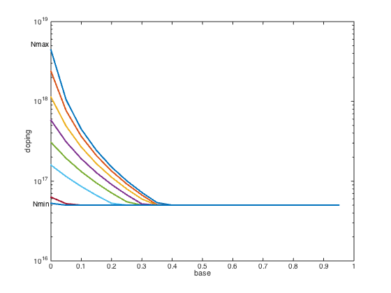

% Boyd, Kim, Vandenberghe, and Hassibi, "A tutorial on geometric programming" % Joshi, Boyd, and Dutton, "Optimal doping profiles via geometric programming" % Written for CVX by Almir Mutapcic 02/08/06 % (a figure is generated) % % Determines the optimal doping profile that minimizes base transit % time subject to a lower bound constraint on the current gain (beta). % This problem can be posed as a GP: % % minimize tau_B % s.t. Nmin <= v <= Nmax % y_(i+1) + v_i^const1 <= y_i % w_(i+1) + v_i^const2 <= w_i, etc... % beta => beta_min % % where variables are v_i, y_i, and w_i. % problem size M = 20; % problem constants g1 = 0.42; g2 = 0.69; Nmax = 5*10^18; Nmin = 5*10^16; Nref = 10^17; Dn0 = 20.72; ni0 = 1.4*(10^10); WB = 10^(-5); C = WB^2/((M^2)*(Nref^g1)*Dn0); % minimum current gain values beta_min_GE = [1 1.4 1.8 2.2 2.6 3.0 3.4 3.43]*(1e-11); % exponent powers pwi = g2 -1; pwj = 1+g1-g2; v_array = []; for k = 1:length(beta_min_GE) fprintf( 'beta_min_GE = %g: ', beta_min_GE(k) ); cvx_begin gp quiet % optimization variables variables v(M) y(M) w(M) % objective function is the base transmit time tau_B = C*w(1); minimize( tau_B ) subject to % fixed problem constraints Nmin <= v <= Nmax; for i=1:M-1 y(i+1) + v(i)^pwj <= y(i); w(i+1) + y(i)*v(i)^pwi <= w(i); end % equalities y(M) == v(M)^pwj; w(M) == y(M)*v(M)^pwi; % changing constraint (WB*beta_min_GE(k)/(M*Nref^(g1-g2)*Dn0))*y(1) <= 1; cvx_end fprintf( '%s\n', cvx_status ); % keep the optimal solution v_array = [v_array v]; end % plot the basic optimal doping profile figure, clf nbw = 0:1/M:1-1/M; for k = 1:length(beta_min_GE) semilogy(nbw,v_array(:,k),'LineWidth',2); hold on; end axis([0 1 1e16 1e19]); xlabel('base'); ylabel('doping'); text(0,Nmin,'Nmin ', 'HorizontalAlignment','right'); text(0,Nmax,'Nmax ', 'HorizontalAlignment','right'); hold off;
beta_min_GE = 1e-11: Solved beta_min_GE = 1.4e-11: Solved beta_min_GE = 1.8e-11: Solved beta_min_GE = 2.2e-11: Solved beta_min_GE = 2.6e-11: Solved beta_min_GE = 3e-11: Solved beta_min_GE = 3.4e-11: Solved beta_min_GE = 3.43e-11: Solved
